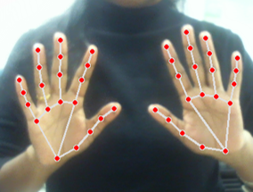
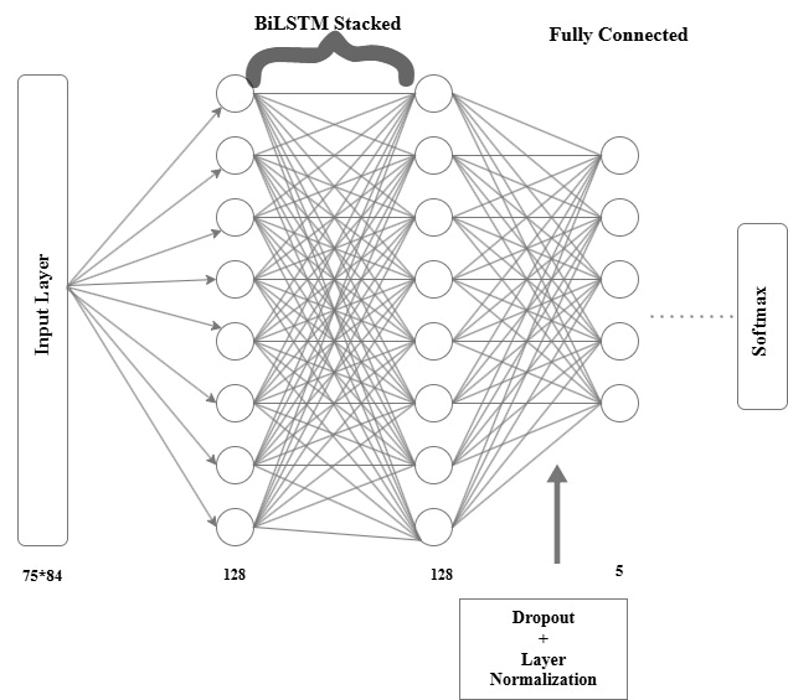
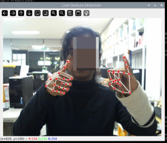
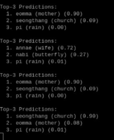

RESEARCH · IEIE 2025 SUMMER CONFERENCE
Lightweight BiLSTM-Based Korean Sign Language Recognition
A five-class isolated-gesture recognizer using 2D MediaPipe hand keypoints. The conference presentation reports 95% test accuracy and 7–10 FPS on a Raspberry Pi 4 Model B.
Project overview
This work recognizes five isolated Korean Sign Language gestures from hand-movement keypoints rather than raw image pixels. A custom video dataset was recorded with four non-professional signers using standard webcams. The presentation describes a stratified 80/20 train/test split and reports 95% accuracy on the held-out test set.
The five classes are 엄마 (mother), 아내 (wife), 성당 (church), 비 (rain), and 나비 (butterfly). This is a limited-vocabulary gesture-classification study, not continuous sign-language translation.
Paper title: “Lightweight BiLSTM-Based Korean Sign Language Recognition Model Using MediaPipe Keypoints: Deployment on Raspberry Pi.”
Data and model
- MediaPipe Hands extracts 21 landmarks per hand, represented as x/y coordinates. Two detected hands produce an 84-value feature vector per frame; the presentation says a missing hand is zero-padded.
- Each input is a 75-frame sequence (75 × 84). Clips without 75 valid frames were discarded, and the presentation describes keypoint-level jitter and duplication to address class imbalance.
- A two-layer bidirectional LSTM uses 64 hidden units per direction, followed by layer normalization, dropout, and a five-class linear classifier.
- The presentation specifies 0.5 dropout between LSTM layers; it also says dropout is applied after the final sequence representation before classification.
Reported results and deployment
The presentation reports 95% accuracy on the held-out split for the five gesture classes. It reports 7–10 FPS on a Raspberry Pi 4 Model B running Raspberry Pi OS 5 (64-bit), including webcam capture, MediaPipe keypoint extraction, sequence buffering, and model inference. The model was exported with TorchScript for ARM CPU inference; the reported model size is 980 KB.
These results apply to the study’s small, custom dataset and five isolated gestures. The presentation notes confusions between some visually similar gestures. They do not establish performance across the broader KSL vocabulary, signers, or continuous signing in everyday settings.
Figures from the presentation
The figures below show the keypoint representation, classifier design, and Raspberry Pi demo outputs.

The overlay shows the hand landmarks used as model input. In the described pipeline, the landmark coordinates are converted to 2D features for each frame, then combined across 75 frames to represent one gesture clip.

The model receives a 75 × 84 keypoint sequence, processes its temporal pattern with bidirectional LSTM layers, and produces scores for five gesture classes. The presentation describes 64 hidden units in each direction, giving a 128-dimensional representation before classification.

This screenshot illustrates the webcam inference interface with hand landmarks overlaid during a recognition session. It is a visual example of the deployed pipeline; the FPS and accuracy figures are reported separately in the presentation.

The console lists the three highest-scoring class predictions for sample inputs, including the predicted gesture label and score. These are example outputs from individual clips, not class-wide accuracy or confidence calibration results.
Conference & paper
IEIE 2025 Summer Annual Conference, Jeju, South Korea. The presentation lists Robert Sweetha Malar, Doliev Jasurbek, and Shin KyooJae as authors.
View the paper on DBpia ↗